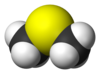

dimethyl-sulfide

Definition: Dimethyl sulfide (DMS) or methylthiomethane is an organosulfur compound with the formula (CH3)2S. The simplest thioether, it is a flammable liquid that boils at 37 °C (99 °F) and has a characteristic disagreeable odor. It is a component of the smell produced from cooking of certain vegetables, notably maize, cabbage, beetroot, and seafoods. It is also an indication of bacterial contamination in malt production and brewing. It is a breakdown product of dimethylsulfoniopropionate (DMSP), and is also produced by the bacterial metabolism of methanethiol.
Source: Wikipedia
Wikipedia Page (Something wrong with this association? Let us know.)
Wikidata Page (Something wrong with this association? Let us know.)